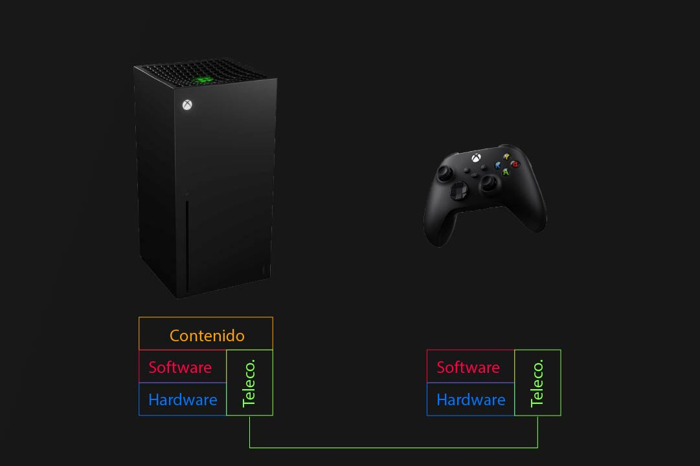
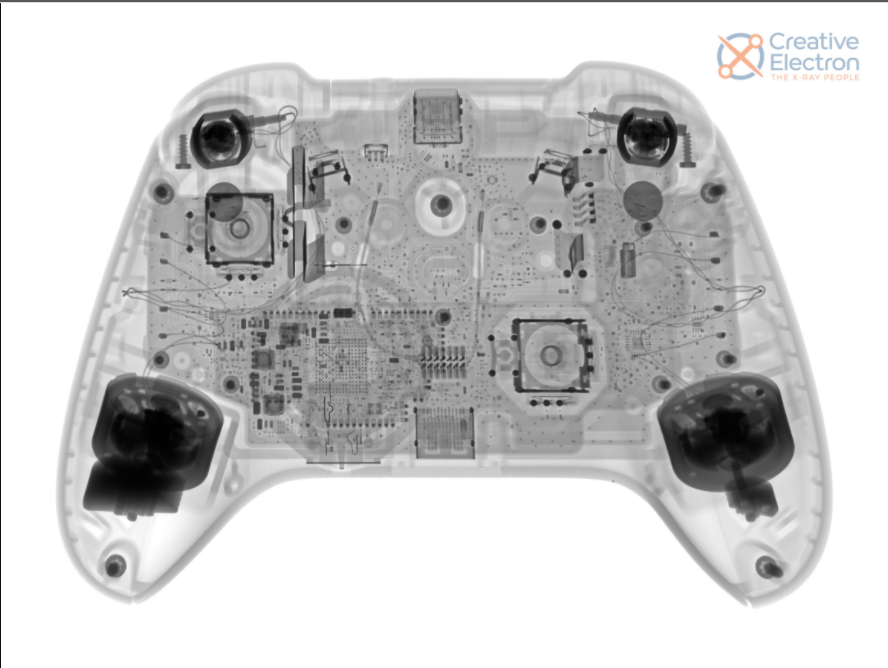
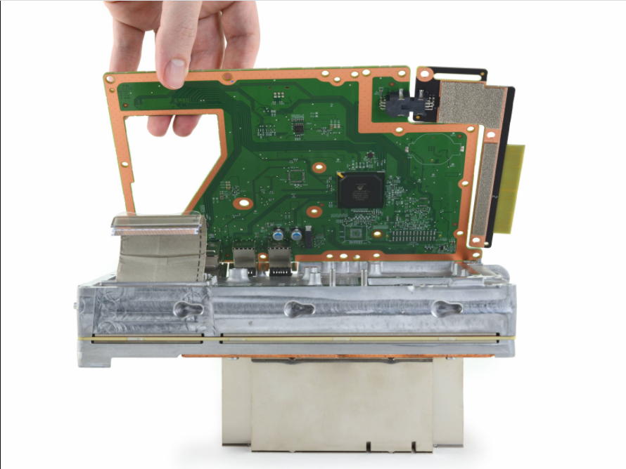
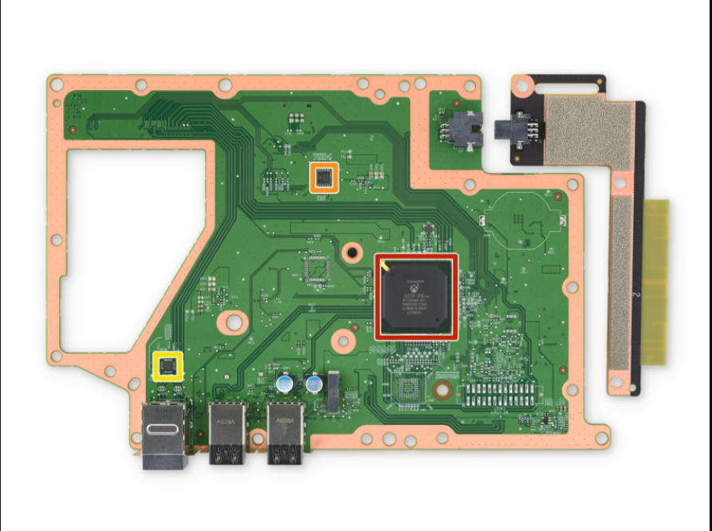
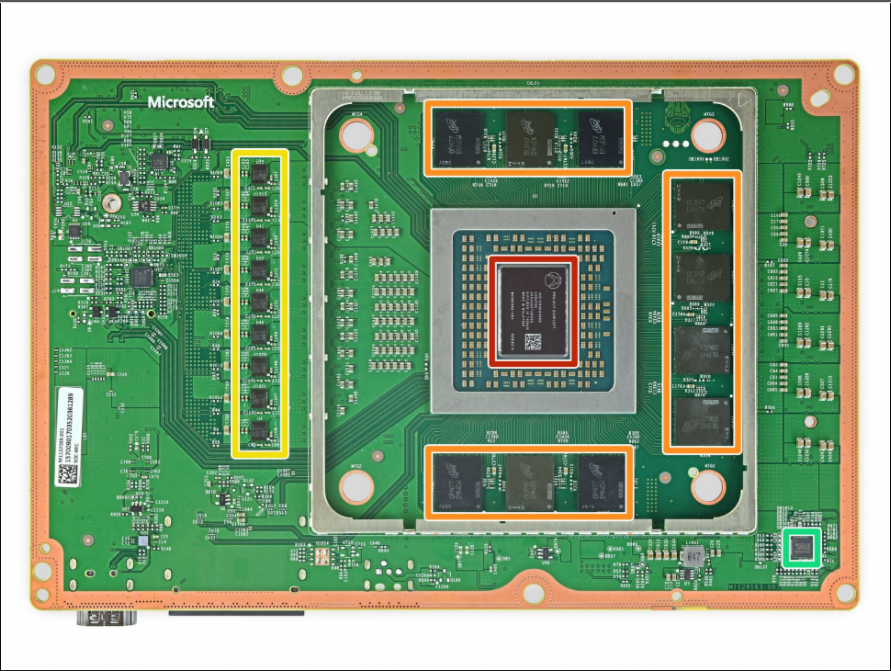
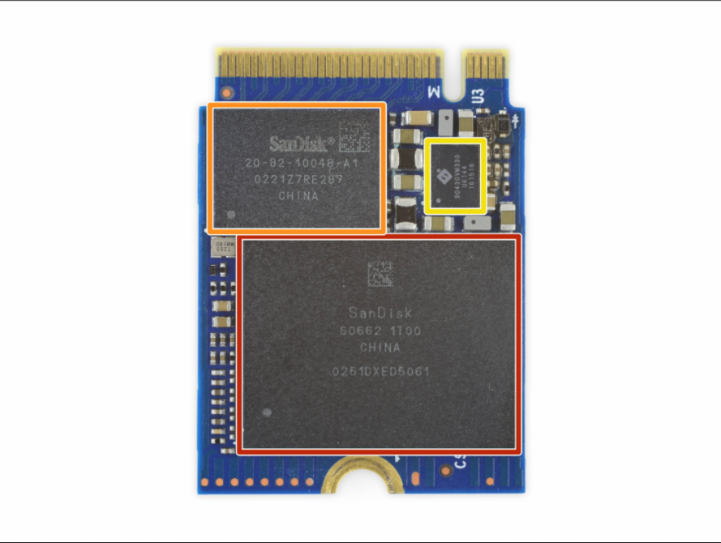
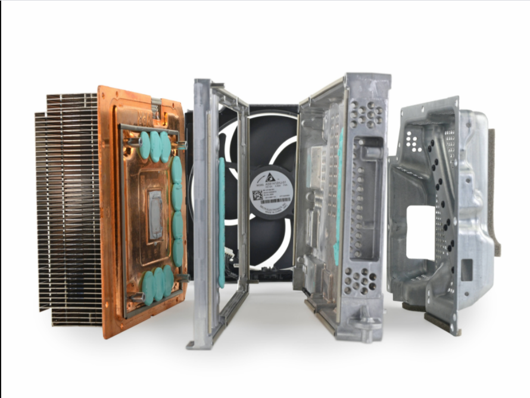

Xbox Series X
"Power your dreams"
Las series x es la consola de nueva generacion de Xbox la cual innova en todos sus aspectos debido a su diseño innovador y su apartado tecnico, lo cual comparado con su predecesor es una mejora notoria debido a que esta nueva generacion emplea tecnologia diferentes
Sistema Multimedia Distribuido Multipropósito (SMDM)
¿Por qué la Xbox Series X es un SMDM?
Subsistemas
| Nombre | Cantidad | Propósito |
| Consola Xbox Series X | 1 | Consola de videojuegos para reproducir, almacenar y jugar los nuevos contenidos multimedia de la nueva generación. |
| Control Xbox Inalambrico Serie X | 1 | Control inalámbrico que se conecta a la consola, mejoras en la ergonomía y retrocompatibilidad con otros dispositivos. |
Características del Elemento CPU de Referencia - Subsistema: Consola Xbox Series X
| Atributo | Descripción | Justificación |
| Frecuencia de reloj | 3,8 GHz | La consola corre a dicha frecuencia cuando el SMT está desactivado. Haciendo posible correr juegos de la nueva generación de consolas a una resolución de UHD 4K. |
| N° de núcleos | 8 | Se usan 7 núcleos para los juegos y 1 para el correcto funcionamiento del sistema operativo y visualización del contenido por la consola. |
| N° de hilos | 16 | Dependiendo si el SMT está activo se usarán en su totalidad. Haciendo posible cambiar de forma instantánea por cualquier juego o aplicación. |
Más información de los subsistemas
Elementos concretos
Fuente alimentación
Mando
Placas
Primera placa
Segunda placa
SSD
Ventilación
Créditos: Canal de Austin Evans
Características técnicas
Totalmente re diseñada
La nueva Xbox Serie X cuenta con unas Características tecnicas muy potentes que nos permitiran jugar nuestros titulos favoritos en resolución hasta 4k UHD y una cadencia de ímagen de hasta 120 fotogramas por segundo.
| Componente | Descripción |
|---|---|
| CPU | Procesador de 8 núcleos a 3,8 GHz |
| GPU | Procesador gráfico personalizado con 52 unidades de cálculo a 1,825 GHz |
| Memoria | 16 GB GDDR6 con bus de 320 bits |
| Ancho de banda de la memoria | 10 GB a 560 GB/s y 6 GB a 336 GB/s |
| Rendimiento de E/S | 2,4 GB/s (datos sin comprimir) y 4,8 GB/s (datos comprimidos) |
| Almacenamiento Interno | Unidad SSD personalizada de 1 TB con interfaz NVMe |
| Unidad óptica | Lector de Blu-ray 4K |
| Sonido | Dolby Digital 5.1, DTS 5.1, Dolby TrueHD con Atmos y LPCM de hasta 7.1 canales |
| Conectividad | 1 x HDMI 2.1, 3 x USB 3.1, 1 x Gigabit Ethernet y ranura para tarjetas de expansión |
| Conectividad Inalámbrica | WiFi 802.11ac. Conexión de radio de doble banda para accesorios |
| Dimensiones | 151 x 151 x 301 mm |
| Peso | 4,44 kg |
Características Xbox Wireless Controller de Xbox Series X
Microsoft ha introducido pequeños cambios en las líneas de diseño del chasis del Xbox Wireless Controller que encontraremos en Xbox Series X. Continuismo deliberado para mantener la confianza depositada en el mando que ya vimos en Xbox One; que fue, a su vez, una evolución clara del de Xbox 360.
El D-pad es uno de los cambios más visibles y sensibles. Rendimiento y accesibilidad fueron las palabras utilizadas por Whitaker para comentar el cambio, que reconoce basarse en lo que aprendieron con el control del Elite y en el uso mayoritario que se le da al D-pad en la comunidad de jugadores de videojuegos en general.
| Características |
|---|
| - Batería por pilas AA; alimentación USB-C. Reemplazable |
| - Integración del botón Compartir |
| - Redondeo ligero en los botones superiores |
| - Reducción en los bordes de los gatillos LT y RT |
| - Micrófono y altavoz incorporados |
| - Puerto auriculares 3.5 |
Créditos ifixit
Potencia, retrocompatibilidad y más
Xbox Series X una nueva generacion
Los FLOPS son la cantidad de operaciones en punto flotante (operaciones con números, que esto no deja de ser algo matemático) que un sistema puede hacer cada segundo y cuando Microsoft nos dice que Xbox Series X tiene 12 TFLOPS quiere decir que cuenta con la capacidad de hacer 12 x 10^12 millones de operaciones de coma flotante en un segundo, o 12.000.000.000 FLOPS.
Xbox Series X será compatible con miles de videojuegos desde su lanzamiento gracias a la retrocompatibilidad mejorada en la que están trabajando en un departamento dedicado de la compañía. Con el compromiso de que la práctica totalidad de juegos de Xbox One y una vasta cantidad de Xbox 360 y la Xbox original puedan ejecutarse en la nueva generación de Microsoft,
Xbox Series X vs Xbox One
| Componente | Xbox Series X | Xbox One |
|---|---|---|
| CPU | Procesador de 8 núcleos a 3,8 GHz | Procesador de 8 núcleos a 2.3GHz por núcleo |
| RAM | 16 GB de RAM GDDR6 | 12 GB de RAM GDDR5 |
| GPU | 12 teraflops de potencia y 52 unidades de cómputo que funcionan a 1.825GHz | 6 teraflops de potencia, 40 unidades de cómputo y funcionando a 1.172GHz |
| Almacenamiento | Almacenamiento SSD (unidad de estado sólido) | Disco duro de 1TB |
| Precio | $ 499 | $ 299 |
Retrocompatibilidad
Microsoft ha confirmado que Xbox Series X/S será totalmente retrocompatible con los juegos a los que se puede jugar en Xbox One, sin importar si son de esta consola, de 360 o de la primera Xbox.